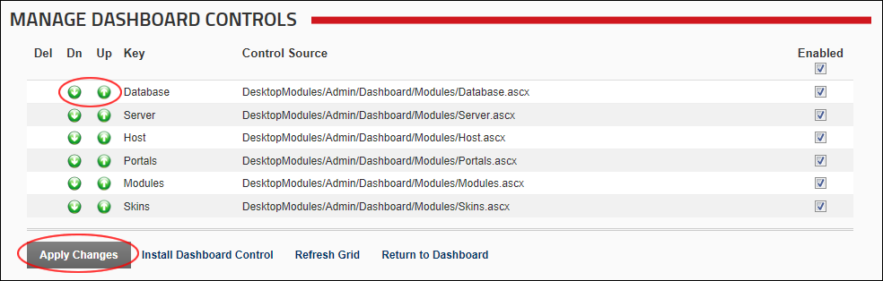
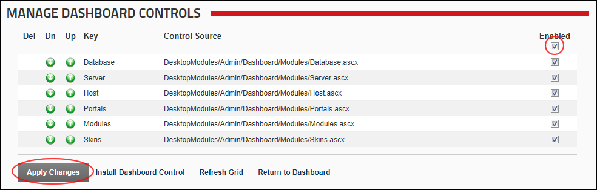
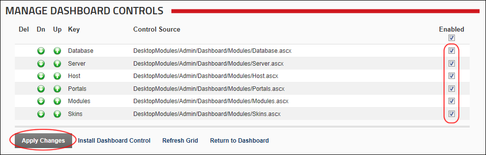
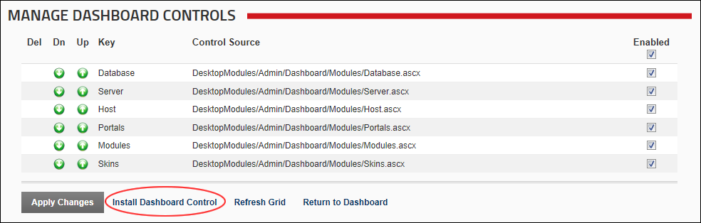
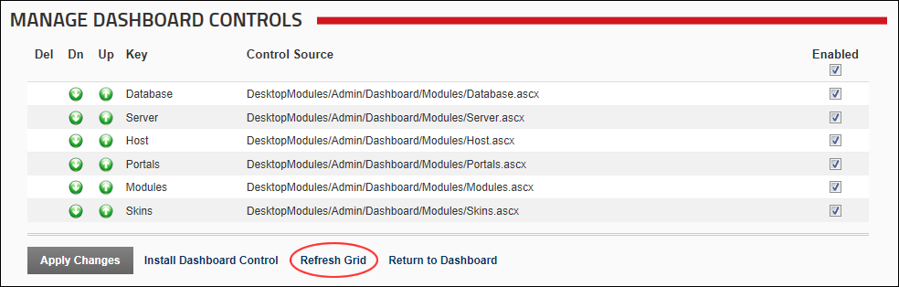

Managing Dashboard Controls
How to manage dashboard controls using the Dashboard module.
- Navigate to Host >
 Dashboard.
Dashboard.
- Click the Manage Dashboard Controls button. This displays the Manage Dashboard Controls page where you can perform any of the following management tasks:
Deleting a Dashboard Control
- In the Del column, click the Delete
 button beside a control to delete it from the Dashboard.
button beside a control to delete it from the Dashboard.
Reordering Dashboard Controls
- In the Dn column, click the Down
 button beside a control to move it one tab position to the left on the Dashboard, and then click the Apply Changes link.
button beside a control to move it one tab position to the left on the Dashboard, and then click the Apply Changes link.
- In the Up column, click the Up
 button beside a control to move that tab one position to the right on the Dashboard, and then click the Apply Changes link.
button beside a control to move that tab one position to the right on the Dashboard, and then click the Apply Changes link.

Enabling or Disabling all Dashboard Controls
- In the Enabled column, click on the check box located at the very top of this column to set all fields as follows:
- Mark
 the check box to enable all controls.
the check box to enable all controls. - Unmark
 the check box to disable all controls.
the check box to disable all controls.
- Click the Apply Changes link.

Enabling or Disabling a Dashboard Control
- In the Enabled column, select from these options:
- Mark the check box beside a field to enable it.
- Unmark the check box beside a field to disable it. Disabling a dashboard control removes that tab from the Dashboard.
- Click the Apply Changes link.

Installing a Dashboard Control
- Click the Install Dashboard Control link. This displays the Upload New Extension Package page of the Install Extension Wizard.
- Complete all steps of the Install Extension Wizard. See "Using the Install Extension Wizard"

Refreshing the Dashboard Control Grid
- Click the Refresh Grid link located at the base of the module. This refreshes the grid with any recent updates.
